DESIGN IMPROVEMENT
REPORT
Visual & UX Audit | Design Inspiration | Improvement Roadmap
March 2026 | Prepared by Bhaskar Roy
Aum Architects at a Glance
20 years of architectural excellence — but the website doesn't show it
The firm has the credentials of a world-class practice.
The website, however, feels like a basic portfolio template from 2015.
Current State Audit
Performance | Visual Design | UX | Content
Performance — Critical Issues
Users wait 7.5 seconds to see content on mobile. Target: under 2.5 seconds.
8 Critical Issues Found
The Transformation Vision
| Element | Current State | Proposed State |
|---|---|---|
| Hero | Static anniversary logo | Fullscreen cinematic project imagery with parallax |
| Scroll | No animations | Smooth scroll + subtle parallax + reveal transitions |
| Images | Small uniform grids | Full-bleed imagery, masonry layout, editorial asymmetry |
| Typography | Standard hierarchy | Dramatic scale (80-120px headlines), tight tracking |
| Portfolio | 2 categories, basic grid | 22+ filters, masonry grid, featured projects |
| Project Pages | Basic image gallery | Scroll-driven storytelling with parallax layers |
| Interactions | None | Custom cursor, hover states, page transitions |
| Performance | 37 mobile / 68 desktop | 70+ mobile / 90+ desktop |
Brand colors, fonts (Montserrat/Poppins), and logo remain unchanged.
Design Inspiration
Award-Winning Architecture Websites | Verified References
Architecture Firms Setting the Standard

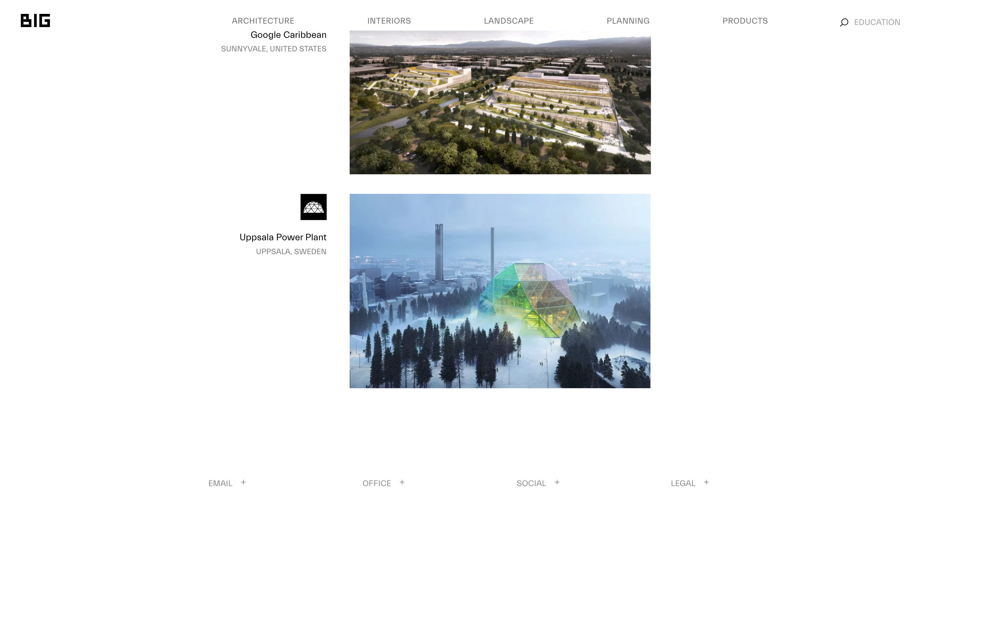
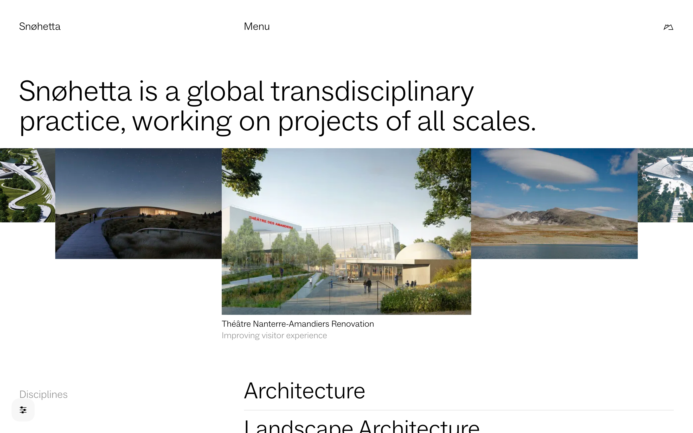
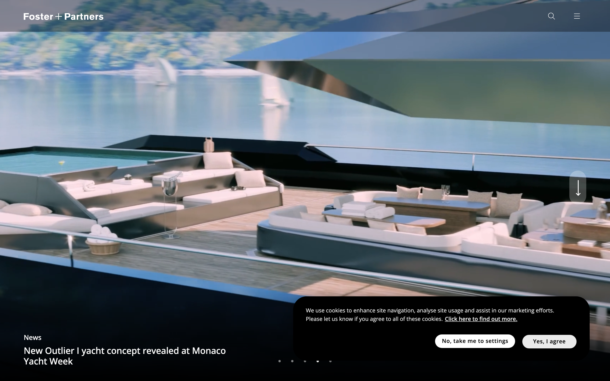
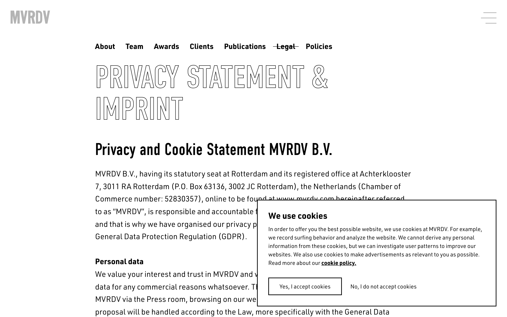
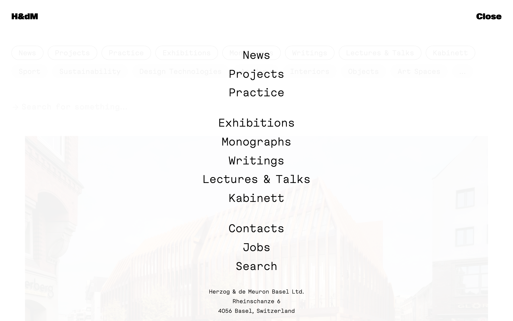
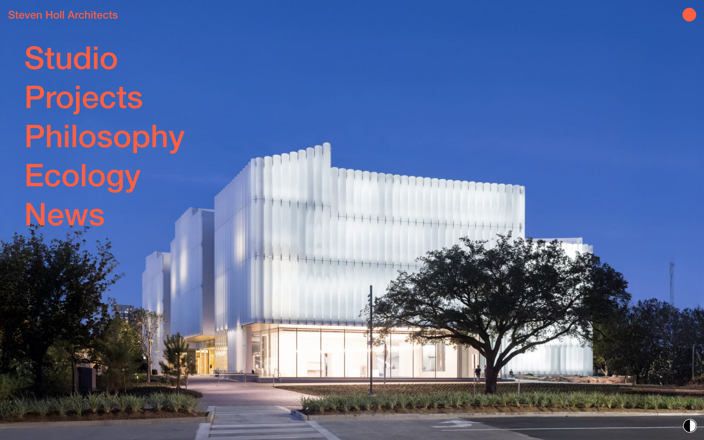
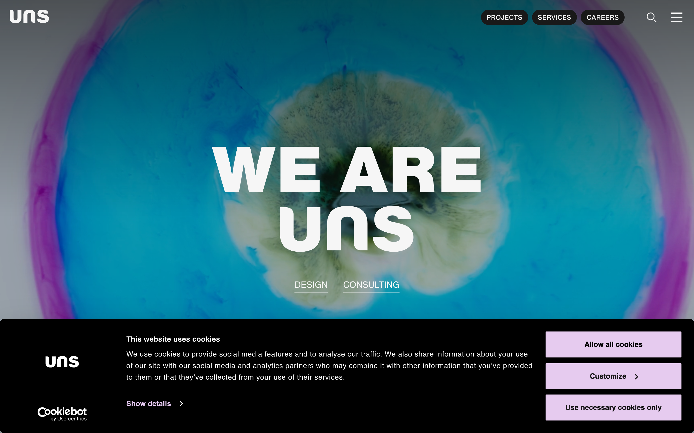

Editorial Layout & Scroll Animation References
Editorial Layouts
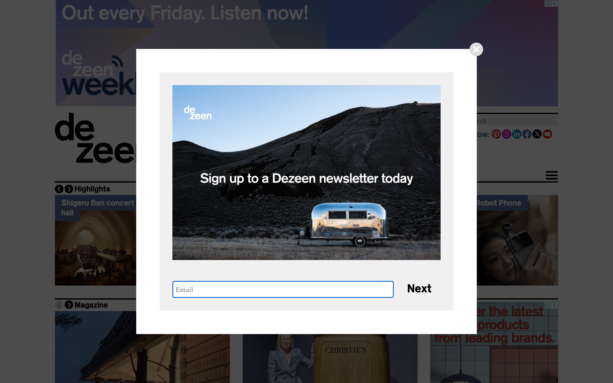
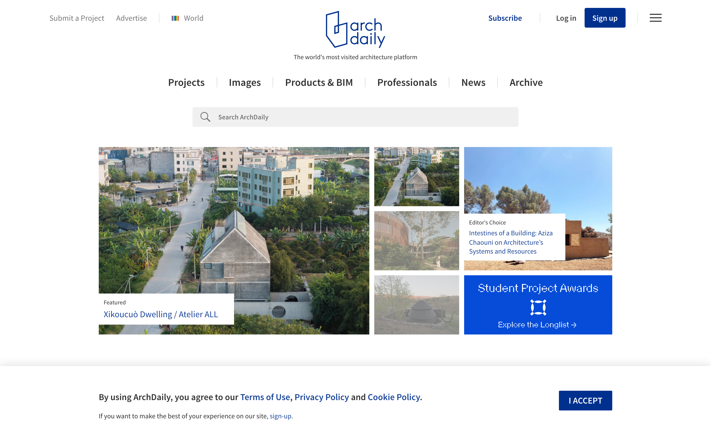
Scroll Animation Showcases
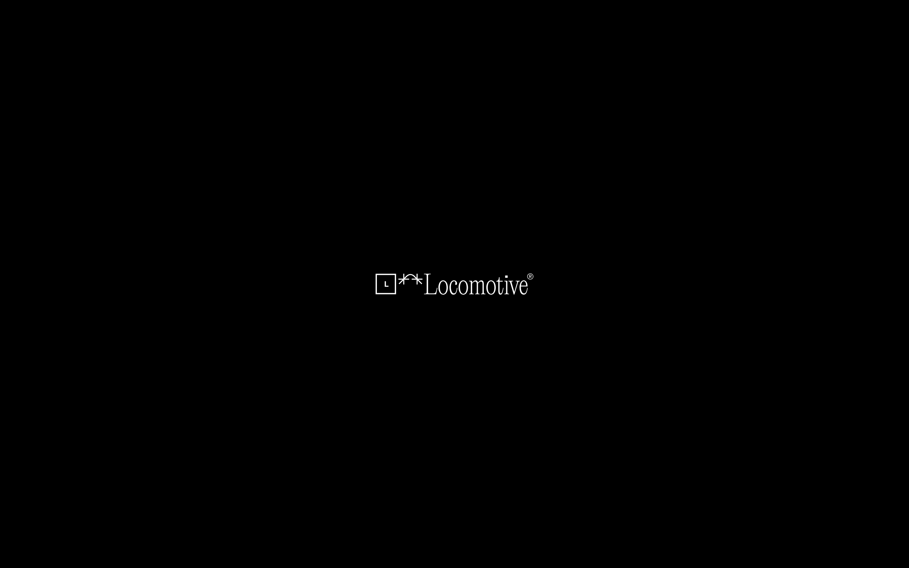
Current State: aumarch.com
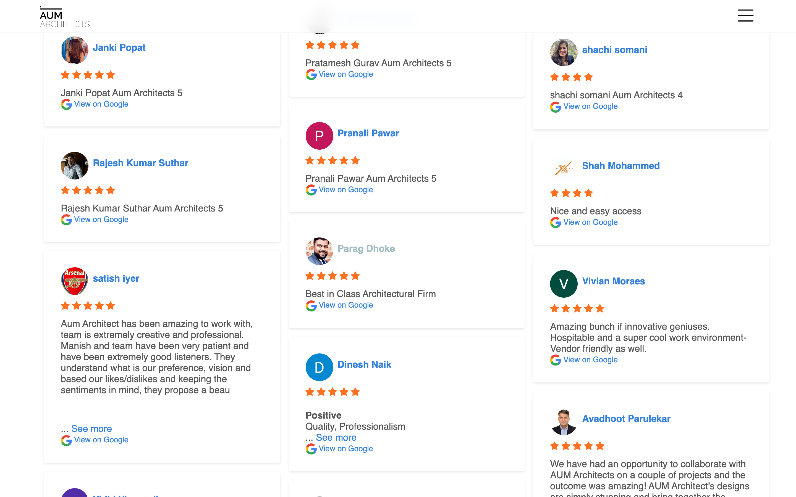
5 Design Patterns That Define Premium Architecture Sites
Design Ideas
Specific Recommendations for Each Section
Hero Section — The First 3 Seconds
- No visual impact or emotional connection
- Looks like a placeholder page
- Wastes prime real estate
- Zero scroll depth or parallax
- Doesn't showcase firm's best work
- Hero image from latest award-winning project
- Parallax effect (foreground/midground/background)
- Minimal overlay text (firm name + tagline)
- Smooth scroll indicator at bottom
- Auto-rotate between 3-5 hero projects
Inspired by: UNStudio, Foster + Partners, Lando Norris
Portfolio — Editorial Masonry Grid
Inspired by: MVRDV, Zaha Hadid, Beaucoup Studio
Project Pages — Scroll-Driven Storytelling
Scroll-Driven Narrative
Each project tells a story as the user scrolls: concept → process → final result. Parallax layers create depth. Image reveals maintain engagement. Text is minimal—architecture speaks for itself.
Statistics Section — Bold Numbers
Scroll Animation Toolkit
| Technique | Where to Use | Technology |
|---|---|---|
| Smooth Scroll | Entire site (replaces native browser scroll) | Lenis or Locomotive Scroll |
| Clip-Path Reveals | Project cards, hero sections | GSAP ScrollTrigger + CSS clip-path |
| Split-Text Animations | Headlines, taglines | GSAP SplitText plugin |
| Staggered Fade-Ins | Portfolio grids, team photos | GSAP stagger parameter |
| Parallax Depth | Hero images, project pages | GSAP ScrollTrigger scrub |
| Count-Up Numbers | Statistics section | GSAP to() + onUpdate callback |
| Custom Cursor | Portfolio hover, project links | JavaScript mousemove + CSS transform |
| Page Transitions | Between pages (SPA feel) | Barba.js + GSAP |
| Marquee Scroll | Client logos, awards | GSAP to() loop + linear ease |
| Smart Sticky Nav | Header (hides on scroll down, shows on scroll up) | JavaScript scroll direction detection |
Technical Recommendations
Technology Stack & Performance Targets
Recommended Technology Stack
| Layer | Technology | Why |
|---|---|---|
| Framework | Next.js 14 (React) | SSG for performance, image optimization, SEO-friendly |
| Smooth Scroll | Lenis (by Studio Freight) | Lighter than Locomotive, buttery smooth, actively maintained |
| Scroll Animations | GSAP + ScrollTrigger | Industry standard, performant, extensive documentation |
| Image Optimization | Next.js Image + WebP | Automatic lazy loading, responsive images, format optimization |
| Hosting | Vercel or Netlify | Edge CDN, automatic deployments, excellent performance |
| CMS | Contentful or Sanity | Headless CMS for easy project updates, image management |
Performance Targets
Accessibility — Non-Negotiable
Implementation Roadmap
4 Phases | 8 Weeks Total
Phases 1-2: Foundation & Performance (Weeks 1-4)
- Image optimization (WebP conversion, proper sizing)
- Implement lazy loading on all below-fold images
- Optimize CSS delivery (inline critical CSS)
- Font optimization (preload, font-display: swap)
- Minify CSS/JS, enable compression
- Set up CDN for asset delivery
- Run Lighthouse audit and fix remaining issues
- Replace static logo with fullscreen hero imagery
- Implement Lenis smooth scroll
- Add parallax effect to hero section
- Redesign homepage layout (editorial asymmetry)
- Add scroll-triggered fade-in animations
- Implement hero image carousel (3-5 projects)
- Create statistics section with count-up animation
Phases 3-4: Portfolio & Polish (Weeks 5-8)
- Build masonry portfolio grid
- Implement advanced filtering (22+ categories)
- Add staggered reveal animations to portfolio
- Redesign project detail pages (scroll storytelling)
- Add parallax layers to project images
- Create project image galleries (masonry layout)
- Implement project navigation (prev/next)
- Add custom cursor on portfolio hover
- Implement hover states across site
- Add page transitions (Barba.js)
- Create About page (404 fix)
- Add contact form with validation
- Implement smart sticky navigation
- Final QA, accessibility audit, launch
The Bottom Line
| Element | Before | After |
|---|---|---|
| First Impression | Static anniversary logo | Cinematic hero imagery with parallax |
| Portfolio Experience | Basic 2-category grid | Editorial masonry with 22+ filters |
| Scroll Experience | None (standard browser scroll) | Smooth scroll + parallax + reveals |
| Mobile Performance | 37 PageSpeed (7.5s LCP) | 70+ PageSpeed (<2.5s LCP) |
| Image Presentation | Small uniform grids | Full-bleed editorial imagery |
| Typography | Standard hierarchy | Dramatic 80-120px headlines |
| Interactions | None | Custom cursor, hover states, transitions |
| Overall Feel | 2015 template | 2026 premium architecture studio |
The firm's world-class work deserves a world-class digital showcase.
THANK YOU
Prepared by Bhaskar Roy
aumarch.com
All reference URLs verified March 2026